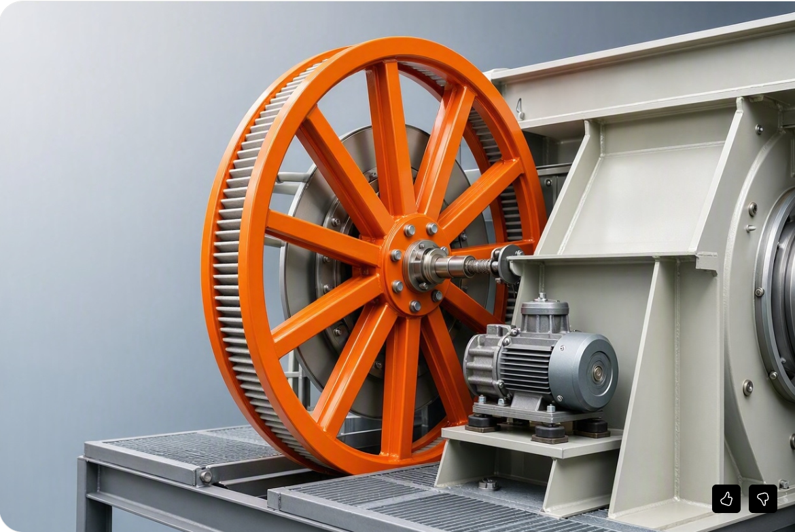
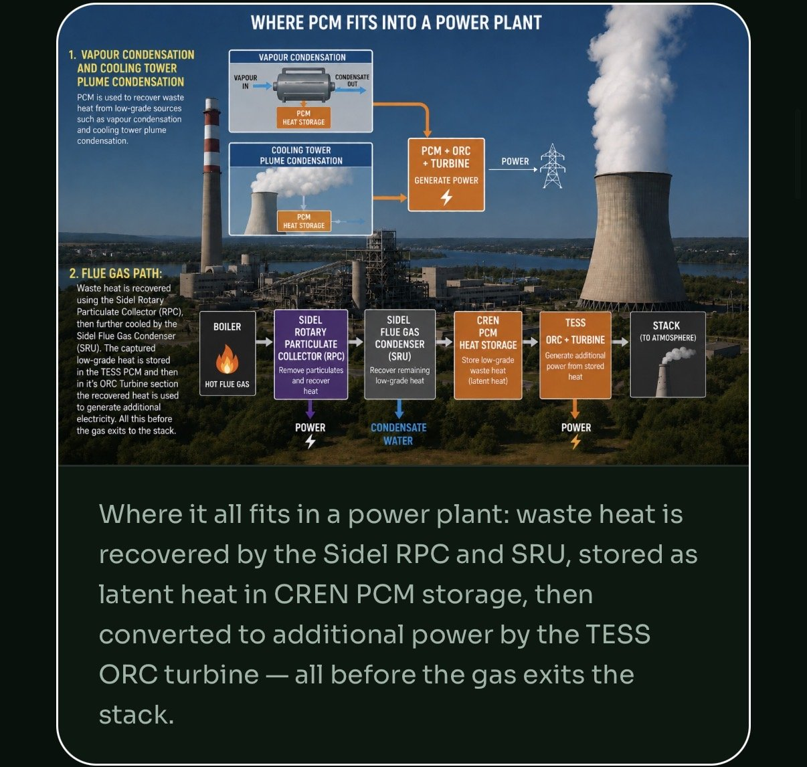

The strongest long-term market — multiple high-grade and low-grade streams across furnaces, coke/sinter, EAF, rolling, quench and off-gas.
Steel and metals facilities are among the strongest long-term markets because they contain multiple high-grade and low-grade thermal streams at once — furnaces, reheating, coke and sinter, hot rolling, EAF, heat treatment, boilers, gas cleaning, off-gas, dust collection, quench and cooling loops, cooling towers and wastewater systems.
| Area | Waste or pain point | Technology fit | Expected result to measure |
|---|---|---|---|
| Furnaces / reheating / hot rolling | High-temperature exhaust and radiant losses; repeated heating and thermal cycling. | TESS + heat exchangers; SRU where exhaust chemistry permits. | Reduced fuel per tonne, recovered heat for preheat and process use, steadier throughput, fewer thermal shocks. |
| Coke / sinter / solid-fuel operations | Particulate-heavy exhaust, visible emissions, ash and solids, heat rejection. | RPC + SRU/TESS integration after an emissions chemistry review. | Particulate capture, lower visible emissions, heat recovery, and possible by-product handling value. |
| EAF / electric-intensive operations | Large electrical peaks, off-gas heat, cooling-water stress and downtime risk. | TESS for thermal buffering and power recovery; ORC/binary cycle where heat quality supports it. | Peak reduction, recovered energy value, cooling-water relief, and resilience. |
| Cooling / quench / water systems | High water throughput, evaporation, blowdown, treatment cost, thermal pollution and pump load. | TESS plus system redesign to reduce thermal rejection and reuse heat. | Water savings, lower pumping power, reduced chemical and treatment burden. |
| Dust collection / boiler house / utilities | Particulate and stack losses; inefficient utility support systems. | RPC for particulates, SRU for suitable flue gas, TESS for storage and reuse. | Cleaner utility operation, lower fuel use, less wasted energy. |
Start with a mapped heat-stream pilot: 5–10 TESS plus 1–2 SRU/RPC blocks depending on furnace, boiler, fuel and exhaust chemistry. Full-site economics are only presented after the actual waste-heat streams, cooling systems, particulate sources and operating priorities have been mapped.

We would rather send you a data request than a brochure. This is what turns a conversation into a bankable project.
Furnace and off-gas temperature and flow; dust and particulate loading; EAF, reheat and rolling schedules; cooling and quench water; boiler house; power tariff; production bottlenecks; downtime; quality loss; maintenance cost; space and shutdown windows.
All claims relating to site savings, water reduction, output increase, emissions outcomes, payback, incentives and deployment economics are planning assumptions, analogues or prior-project references — unless and until they are validated for your specific facility through engineering, measurement, vendor quotation, financing documentation, legal review and final commercial agreements.